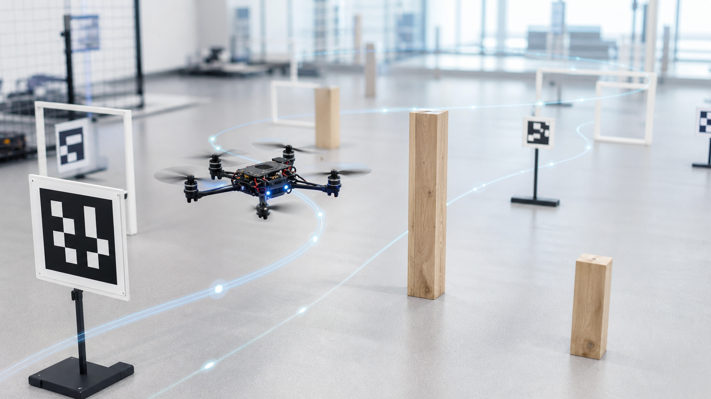
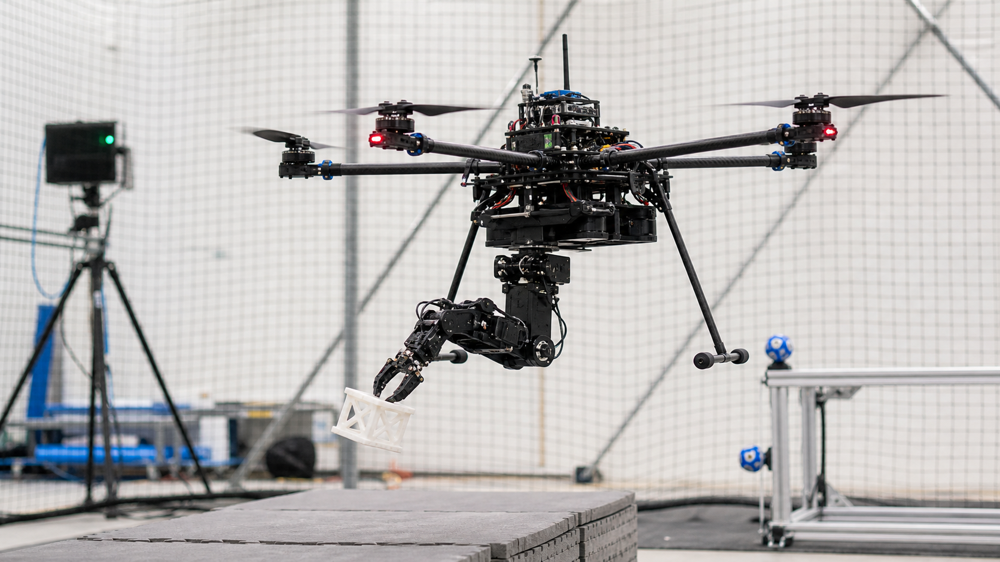

Dongnan Hu 胡栋楠

Welcome! I am Dongnan Hu. I am currently a Research Assistant at National University of Singapore (NUS), supervised by Prof. Guillaume Sartoretti. I received my M.S. degree in Control Engineering from East China University of Science and Technology (ECUST) in June 2024, supervised by Prof. Yang Tang.
My research interests include autonomous navigation, motion planning and control, and mobile robotics. I enjoy building robotic systems where planning algorithms, control design, and real-world experiments meet.
News
- Homepage redesigned as a lightweight static GitHub Pages site.
- Received my M.S. degree in Control Engineering from ECUST.
- Our work on hybrid flying-crawling quadrotors was accepted by IECON 2024.
- Released the preprint on trajectory planning and tracking of hybrid flying-crawling quadrotors.
Selected Publications
Research Interests
- Autonomous navigation: planning and control methods for robots in complex environments.
- Motion planning and control: trajectory generation, tracking, and replanning for hybrid robotic systems.
- Mobile robotics: experimental platforms that connect algorithms with hardware validation.
Projects
Hybrid Flying-Crawling Quadrotor
Jun 2022 - Nov 2023Designed planning and tracking methods for a multimodal quadrotor capable of terrestrial-aerial motion. The planner generates hybrid trajectories satisfying kinematic and dynamic requirements, while the tracking strategy handles terrestrial-aerial transitions through junction-aware replanning.
Perception-Aware Robotic Navigation
Research DirectionExploring how robot perception, mapping, and planning can be coupled to improve autonomous operation in uncertain environments.
Experimental Mobile Robot Systems
Research DirectionBuilding and validating robotic platforms where hardware constraints, control performance, and planning requirements are considered together.

Timeline
2024
M.S. in Control Engineering
East China University of Science and Technology, supervised by Prof. Yang Tang.
2022 - 2023
Hybrid Robot Research
Trajectory planning and tracking for hybrid flying-crawling quadrotors.
2021 - 2024
Graduate Study at ECUST
Focused on autonomous navigation, motion planning, control, and mobile robotics.
2018 - 2020
B.S. in Mechanical Engineering
Nanjing Tech University.
Contact
Email: dongnanhu6556@gmail.com
Location: Shanghai, China